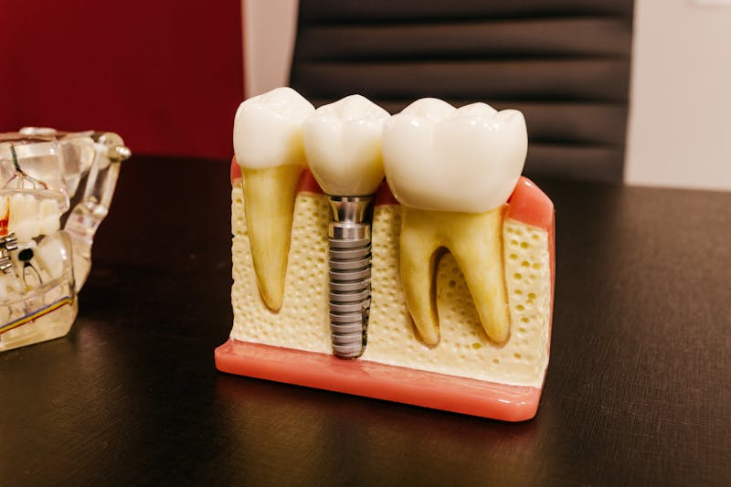
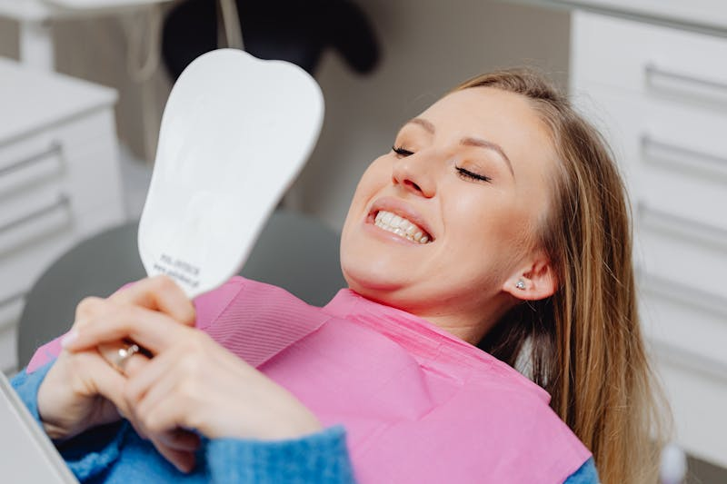
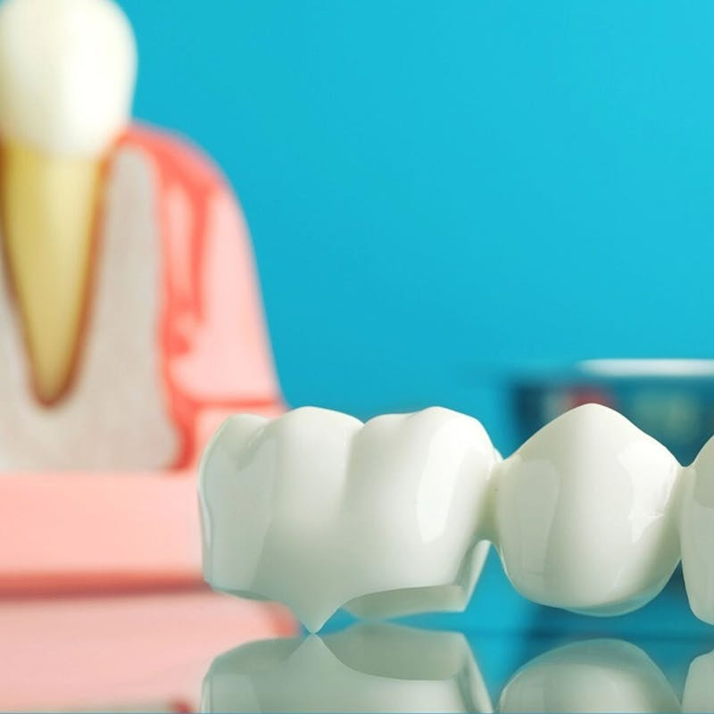
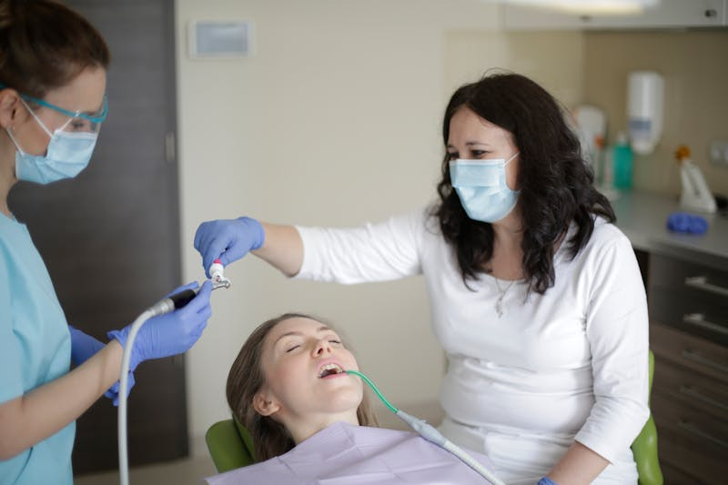
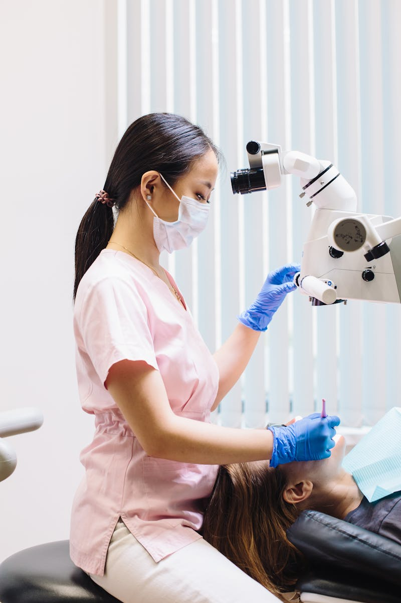
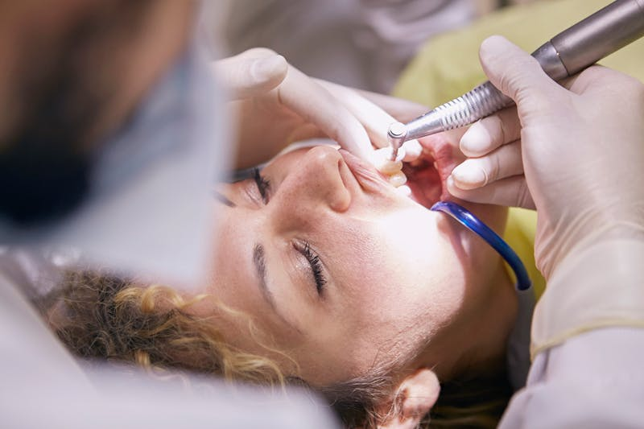
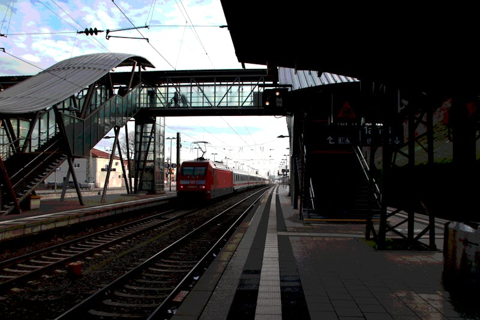

Whitening
미백치료
전문 미백제와 광조사 장비를 이용해 치아 본연의 색을 밝고 투명하게 개선하는 시술입니다. 치아 손상 없이 안전하게 진행됩니다.
- 🔹 전문가 미백 (원내 시술)
- 🔹 자가 미백 (가정용 키트)
- 🔹 내인성 변색 치아 개선
Services
아름다운 미소가 더 돋보이도록 최선의 노력을 다하고 있습니다.

Implant
발치된 치아의 턱뼈에 생체친화적인 티타늄 재질의 인공뿌리를 심어, 다른 치아 손상 없이 자연치아와 가장 유사한 형태와 기능을 회복할 수 있는 치료법입니다.

Aesthetic · Laminate
보철을 이용해 교정치료보다 짧은 시간에 보다 심미적인 치아 배열·모양·색을 회복하고 만들어내는 치료법입니다. 고르지 않은 치아, 이 사이가 벌어진 치아 등에 효과적입니다.
Whitening
전문 미백제와 광조사 장비를 이용해 치아 본연의 색을 밝고 투명하게 개선하는 시술입니다. 치아 손상 없이 안전하게 진행됩니다.

Denture · Prosthetics
부분 틀니와 완전 틀니가 있으며, 여러 치아가 상실되어 광범위하게 저작 기능 및 발음, 심미적인 면을 회복시켜 줄 수 있는 치료법입니다.

Cavity Treatment
충치를 제거한 부위에 다른 재료를 이용해 치아를 메워주는 치료법입니다. 치아 색과 유사한 재료를 사용해 자연스러운 외관을 유지합니다.

Root Canal Treatment
감염된 신경을 제거한 뒤 다른 재료로 신경관을 채워 넣는 근관치료입니다. 발치를 최대한 피하고 자연치아를 보존하는 것을 목표로 합니다.

Periodontal · Scaling
스케일링, 치근활택술 등 치아 뿌리와 주변 조직에 부착된 치석 및 염증조직을 제거하는 치료법입니다. 잇몸 건강의 기본입니다.

Pediatric Dentistry
어린이의 치아는 성인과 다른 특성을 가지고 있습니다. 아이가 치과를 두려워하지 않도록 편안하고 친절한 환경에서 진료합니다.